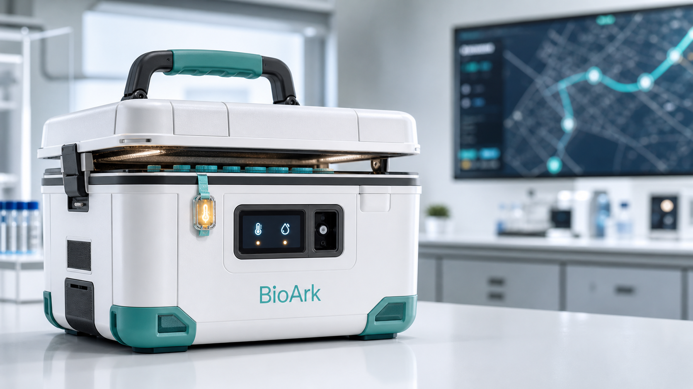

实时控制台
BioArk 生物样本运输态势
汇总运输箱状态、样本温区、定位轨迹、交接签收、异常审计与用户操作记录，适合实验室、物流中心和临床接收点共同使用。

Telemetry
环境趋势
温度 °C
湿度 %RH
震动事件
Selected Box
运输中
BA-TX-0287
- 当前温度
- 3.8°C
- 湿度
- 42%
- 电量
- 86%
- 门锁
- 已锁定
- 温区
- 2-8°C
- 定位
- G60 沪昆高速
Fleet
GPS / 传感器 / 电池
运输箱状态
Route
运输任务与定位
- 取样入箱 上海华山样本中心 · 09:10
- 电子封签 链路签名 #A91F · 09:18
- 在途监测 G60 沪昆高速 · 每 30 秒回传
- 接收复核 南京临床研究仓 · 预计 14:40
Samples
样本批次
| 样本编号 | 类型 | 温区 | 箱体 | 交接状态 | 负责人 |
|---|
Audit
3 待处理
告警与事件
Access
用户与角色
Compliance
GxP / 21 CFR Part 11
合规与完整性
双因子签名
关键操作需二次确认与电子签名。
不可篡改日志
温湿度、开箱、定位、交接全量留痕。
数据备份
云端与本地缓存双写，断网后自动补传。
权限隔离
按实验室、物流、接收方与审计方分域授权。